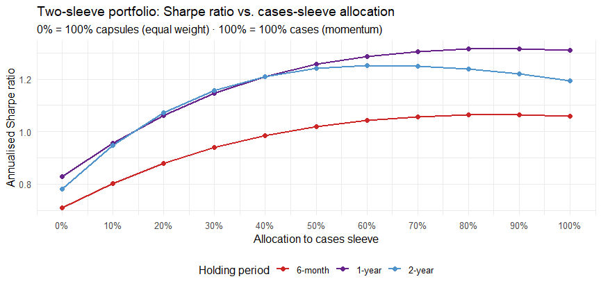

A walk-forward backtest of Modern Portfolio Theory across ~230 CS2 cases and sticker capsules finds the winning strategy flips entirely depending on whether an asset's supply is fixed or ongoing reflective of literature on momentum and equity markets.
Six strategies: equal weight, Sharpe-weighted, Sortino-weighted, Markowitz tangency (mean-variance optimization), a trailing-momentum tilt, and a passive cap-weighted index. Strategies were backtested on 6-month forward returns across 20 non-overlapping rebalance windows (2016–2025), on three overlapping universes: all 242 investable items, 38 cases only, and 192 sticker capsules only.
Strategy performance inverts depending on the universe. The passive index dominates in capsules and the full universe. The momentum portfolio dominates in the cases-only universe.
The CS:GO/CS2 Market is a universe of tradable items, with a large variety of cosmetic items priced through player demand. This study looks at items considered "sensible" investments (items in which supply does not continuously outgrow demand; such as most cosmetic items). Investment culture in the community reflects this: mainly investing in Cases and Capsules, consumable items that disappear when opened and grant the player a random cosmetic item from its specific collection. Cases are randomly dropped whilst playing, sticker capsules are on sale for fixed periods. Cases enter the investable universe once they move from the common to the rare drop pool, and sticker capsules are included after their sale ends.
| Strategy | Mean ret. | Sharpe (ann.) | Total ret. |
|---|---|---|---|
| Momentum | 0.2967 | 1.0593 | 34.5% |
| MVO expanding | 0.2572 | 1.0354 | 29.3% |
| Sortino expanding | 0.2555 | 1.0637 | 29.1% |
| SR expanding | 0.2492 | 1.0660 | 28.3% |
| Equal weight | 0.2427 | 1.0527 | 27.5% |
| Index (buy & hold) | 0.2365 | 0.9779 | 26.7% |
| Strategy | Mean return (log) | Sharpe (ann.) | Avg yearly return |
|---|---|---|---|
| Index (buy & hold) | 0.1903 | 0.6199 | 21.0% |
| Equal weight | 0.1792 | 1.0777 | 19.6% |
| SR expanding | 0.1493 | 0.8528 | 16.1% |
| Sortino expanding | 0.1476 | 0.8351 | 15.9% |
| MVO expanding | 0.1272 | 0.8535 | 13.6% |
| Momentum | 0.1014 | 0.5621 | 10.7% |
Note the split in the capsules table. The index wins on raw return but has the worst Sharpe ratio of all six strategies (0.62) — nearly twice the volatility of equal weight (0.4341 vs 0.2352 std. dev.) for barely more return. Equal weight's 1.0777 Sharpe is the highest of any strategy in this entire study. The index's edge here is compensation for concentration risk, not free alpha.
The six strategies differ in one specific way across rebalances: some chase whatever just went up (momentum re-buys the recent winner every period), some correct away from it (equal weight and MVO reset toward a neutral target each rebalance), and the index cap-weight formula happens to passively track organic price drift.
Momentum is the strongest performer here in both raw returns and Sharpe Ratio: "keep buying whatever just won." This strategy pays off if trends genuinely persist, so its win is itself evidence of persistence. Two candidate explanations exist for why it persists: continuous case reissue means price growth isn't fully capped by scarcity, and/or case demand comes from a broad, unsophisticated (and mostly non-investor) player base that underreacts to news, creating a momentum window.
Momentum is the worst performer in this universe: re-buying recent winners means systematically buying at the tail of tournament-driven hype spikes right before they partially revert. Equal weight actively sells down whatever just spiked and has the best Sharpe ratio of any strategy in either universe. The index portfolio avoids momentum's timing mistake but doesn't correct like equal weight either, so it captures a real long-run scarcity trend at the cost of extra volatility from riding out each spike.
Causality caveat: every case in this dataset has both ongoing supply and real consumption demand (players opening cases); every capsule has both fixed supply and collector/speculative demand. These two factors are confounded and so we cannot distill whether cases trend because supply is elastic, or because demand is consumption-driven and slow-diffusing, or both.
Momentum's winner chasing rule outperforms in cases, but is the worst performer in capsules
Jegadeesh & Titman (1993) 3–12mo momentum; Daniel & Moskowitz document momentum crashes concentrated in thin, high-volatility regimes, such as sticker capsules.
Equal weight's recorrect-toward-neutral rule has the best Sharpe ratio specifically in the capsule universe
Consistent with mean-reversion strategies outperforming in markets where price moves are partly sentiment/overreaction rather than a perfectly competitive market with rational investors.
Index has the highest return and highest volatility in capsules
Amihud & Mendelson: illiquidity/concentration premium. Excess returns earned via undiversified, uncorrected exposure is uncompensated risk instead of alpha.
Mean-variance optimization underperforms almost everywhere tested
Michaud's "Optimization Enigma" (1989): with ~20 observations against 38–242 assets, estimation noise overshadows positive effects. DeMiguel, Garlappi & Uppal (2009): simple 1/N diversification is a high bar that optimized strategies routinely fail to clear once estimation error is accounted for.
The results suggest a two-sleeve allocation is best, combining a momentum sleeve in the cases universe and an equal weight split in the capsules universe.
Weight proportional to trailing 26-week return, positive-momentum items only, capped at 40% per item.
No momentum tilt as chasing recent movers is the poorest performing strategy in the capsules universe.

Sharpe ratio of the blended two-sleeve portfolio across the full allocation range (0% = all capsules, 100% = all cases), by holding period.
The optimal split between the two sleeves shifts with holding period. At 6 months, the best-performing blend is 90% cases / 10% capsules (Sharpe 1.063) versus 1.059 for pure cases technically better, but is negligible. The 1-year result is the same story at the same 90/10 split (1.316 vs. 1.311). Only at 2 years does the blend become meaningfully better: the optimal split moves to 60% cases/40% capsules, with a Sharpe of 1.252 against 1.195 for cases alone. This pattern suggests capsules' long-run scarcity trend require a longer holding period than a year to pay off and meaningfully diversify cases' risk.